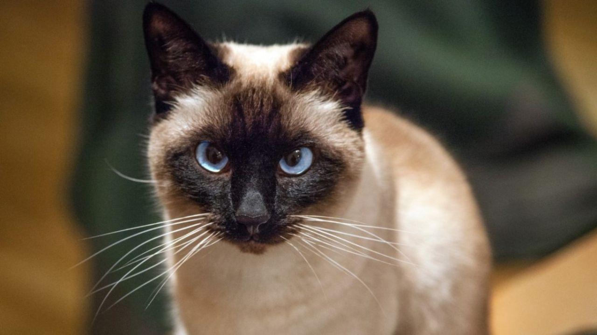

Gatitos gris

El gato siamés moderno es un gato alargado y aerodinámico, bastante distinto morfológicamente de los primeros siameses que llegaron desde Siam, actual Tailandia, y que se caracterizaban por su tamaño medio y por ser animales rotundos y pesados. Lo que es común a ambos, antiguos y modernos, es la distribución del color en las puntas (ColourPoint) y la intensidad de la tonalidad en los ojos azules. A lo largo de todo este artículo vamos a desgranar las características, razas de siamés, carácter o cuidados de esta bella raza de felinos.